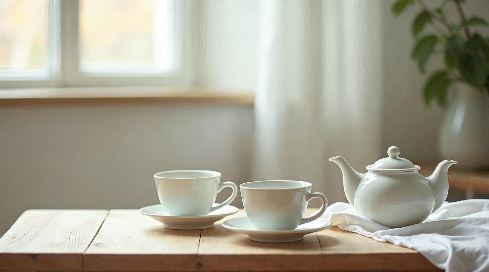
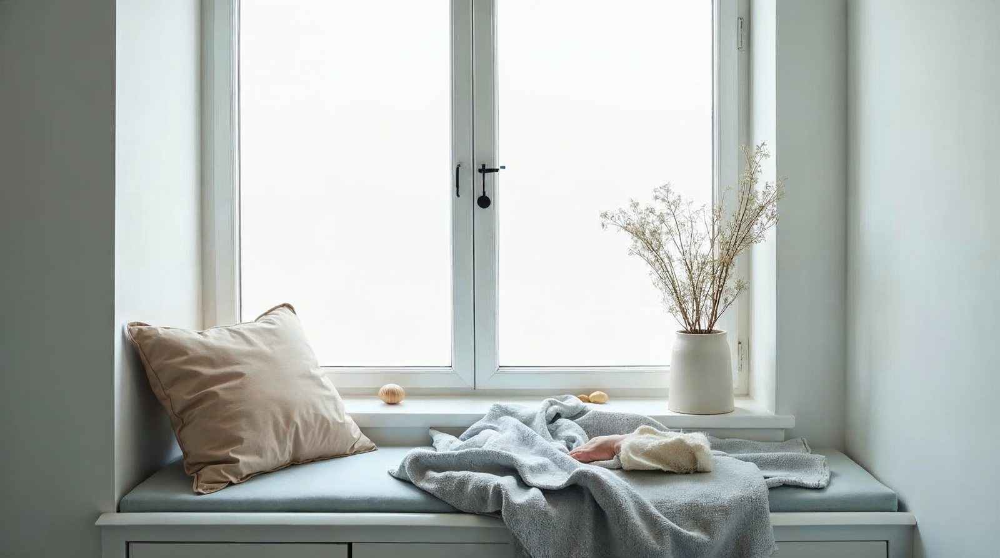
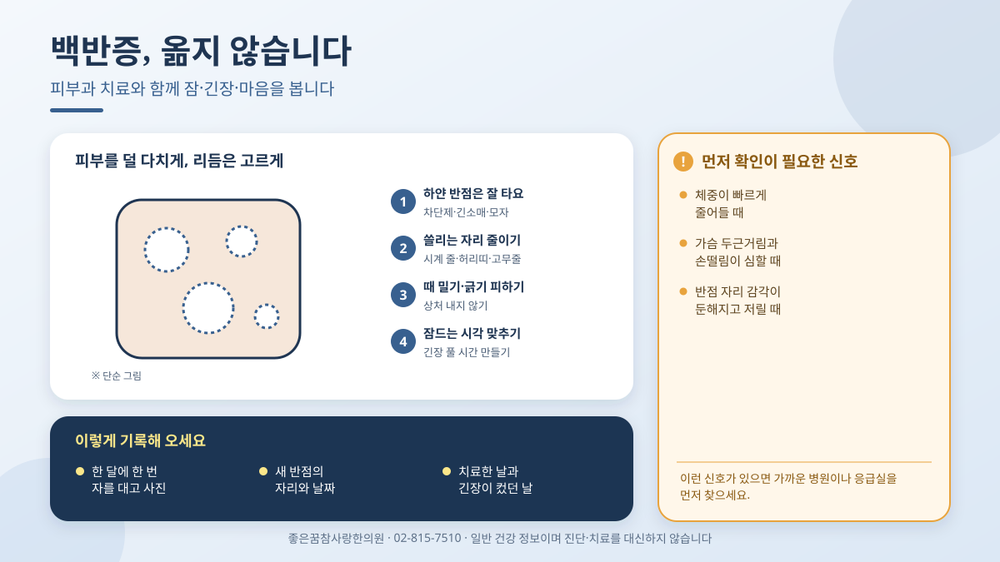

이종호 한의사 감수좋은꿈참사랑한의원 대표원장 (한의사 면허번호 19769)발행 2026-11-26 · 수정 2026-11-26
이 글의 차례
여름 휴가를 다녀와 팔이 고르게 그을렸는데, 손목 안쪽에 동전만 한 자리가 유난히 하얗게 남아 있습니다. 처음에는 햇볕을 덜 받아서 그런가 했는데, 몇 달 뒤 보니 그 하얀 자리가 조금 넓어졌고, 입가와 손등에도 비슷한 자리가 보이기 시작합니다.
진료실에서 백반증 이야기를 꺼내시는 분들의 표정은 대개 무겁습니다. 아프지도 가렵지도 않은데, 남의 눈에 띄는 자리라서 마음이 쓰이십니다. 혹시 옮는 건 아닌지, 자꾸 번지는 건 아닌지 걱정이 꼬리를 물고 이어집니다.
먼저 말씀드리고 싶은 것은 백반증은 다른 사람에게 옮지 않는다는 점입니다. 함께 밥을 먹고 손을 잡고 같은 수건을 써도 옮지 않습니다. 이 사실 하나만 알아도 마음이 조금 가벼워지시는 분이 많습니다.
백반증은 피부과에서 진단과 치료를 받는 것이 중심입니다. 그 곁에서 한의원은 잠과 긴장, 몸의 리듬, 그리고 오래가는 치료 과정에서 지치는 마음을 함께 살핍니다. 오늘은 백반증을 어떻게 이해하고, 생활에서 무엇을 챙기면 좋을지 차근차근 정리해 보겠습니다.
백반증은 어떤 상태인가요?
우리 피부에는 멜라닌이라는 색소를 만드는 세포가 있어서 피부색을 만듭니다. 백반증은 이 세포가 줄어들거나 제 역할을 못 하게 되어, 그 자리의 피부가 우유처럼 하얗게 변하는 상태입니다. 경계가 뚜렷하고, 주변 피부와 색 차이가 분명한 것이 특징입니다.
자주 생기는 자리는 손등, 손가락, 손목, 입과 눈 주변, 팔꿈치, 무릎, 겨드랑이, 사타구니처럼 자주 쓸리거나 접히는 곳입니다. 몸 양쪽에 비슷한 모양으로 생기는 경우도 있고, 한쪽에만 띠처럼 생기는 경우도 있습니다.
하얀 반점 위의 털이 함께 하얘지는 경우도 있습니다. 머리카락이나 눈썹, 속눈썹 일부가 하얗게 변하기도 해서, 머리를 감다가 처음 알아차리시는 분도 계십니다.
백반증은 진행하는 속도가 사람마다 무척 다릅니다. 몇 년 동안 거의 변하지 않는 분도 있고, 몇 달 사이에 여러 자리로 늘어나는 분도 있습니다. 그래서 지금 어느 시기에 있는지를 피부과에서 확인하는 것이 치료 방향을 정하는 출발점이 됩니다.
왜 백반증이 생길까요
백반증의 원인은 아직 한 가지로 설명되지 않습니다. 가장 널리 받아들여지는 설명은 몸의 면역이 자기 피부의 색소 세포를 낯선 것으로 여기고 공격한다는 것입니다. 그래서 갑상선 질환처럼 면역과 관련된 다른 질환과 함께 나타나는 경우가 있습니다.
여기에 여러 요인이 겹친다고 봅니다.
- 가족 가운데 백반증이나 갑상선 질환이 있는 경우
- 큰 스트레스나 몸이 크게 지친 시기를 지난 뒤
- 상처, 화상, 심한 햇볕 화상, 꽉 끼는 옷에 계속 쓸린 자리
- 피부를 자극하는 화학 물질에 자주 닿는 일
특히 상처나 마찰이 있던 자리에 새 반점이 생기는 경우가 있어서, 생활에서 피부를 덜 다치게 하는 것이 관리의 중요한 부분이 됩니다. 손목시계 줄, 허리띠, 속옷 고무줄 자리처럼 계속 쓸리는 곳을 함께 살펴봅니다.
마음의 긴장과 백반증 사이의 관계도 많이 이야기됩니다. 큰일을 겪은 뒤 반점이 생겼다거나 넓어졌다고 말씀하시는 분이 적지 않습니다. 스트레스 하나로 모든 것을 설명할 수는 없지만, 잠과 긴장을 함께 돌보는 것은 몸 전체를 위해서도 의미가 있습니다.
다른 하얀 반점과는 어떻게 다를까요?
피부에 하얀 반점이 생겼다고 모두 백반증은 아닙니다. 헷갈리기 쉬운 것들이 몇 가지 있습니다.
어루러기는 곰팡이 때문에 생기는 것으로, 땀이 많은 가슴과 등, 목에 잘 생깁니다. 하얗거나 연한 갈색의 반점 위에 고운 각질이 있고, 긁으면 가루처럼 일어나는 것이 특징입니다. 여름에 심해지고 피부과에서 확인하면 비교적 간단히 구분됩니다.
백색 비강진은 주로 아이들 얼굴에 생기는 희미한 흰 반점으로, 경계가 흐릿하고 약간의 각질이 있습니다. 피부가 건조하거나 아토피가 있는 아이에게 흔하고, 보습과 자외선 차단으로 서서히 옅어지는 경우가 많습니다.
염증 뒤 탈색은 습진이나 상처가 지나간 자리가 하얗게 남는 것입니다. 원래 염증이 있던 자리 모양을 따르고, 시간이 지나면서 색이 돌아오는 경우가 많습니다. 백반증은 이와 달리 염증 없이 생기고 경계가 또렷하며 우유처럼 하얀 점이 다릅니다.
이렇게 비슷해 보이지만 원인과 관리가 모두 다르기 때문에, 하얀 반점이 처음 생겼다면 피부과에서 특수 조명 검사 등으로 정확히 확인받는 것이 먼저입니다.
피부과에서는 어떤 검사와 치료를 하나요?
피부과에서는 자외선 등을 비춰 하얀 반점의 경계를 더 또렷하게 보는 검사를 하기도 하고, 필요하면 갑상선 기능 같은 혈액 검사를 권하기도 합니다. 함께 있을 수 있는 다른 질환을 확인해 두면 몸 전체를 살피는 데 도움이 됩니다.
치료는 바르는 약, 특정 파장의 빛을 쬐는 광선 치료, 먹는 약 등이 반점의 범위와 진행 정도에 따라 쓰입니다. 대개 몇 달 이상 꾸준히 이어 가는 치료라서, 처음부터 긴 호흡으로 생각하시는 것이 마음에도 편합니다.
치료 중에는 피부과의 안내대로 바르는 약의 횟수와 기간, 광선 치료 일정을 지키는 것이 중요합니다. 바르는 약을 임의로 늘리거나 끊지 마시고, 궁금한 점이 있으면 처방한 선생님께 여쭤보세요.
아이에게 하얀 반점이 생겼다면
아이 얼굴이나 몸에 하얀 반점이 보이면 부모님은 덜컥 겁이 나십니다. 아이들에게는 백색 비강진이나 어루러기처럼 백반증이 아닌 경우도 많아서, 먼저 소아청소년과나 피부과에서 확인받는 것이 순서입니다.
백반증으로 진단을 받았다면 아이가 스스로를 어떻게 느끼는지 살펴 주세요. 친구들의 질문에 아이가 당황하지 않도록, 옮지 않는 피부 상태라는 것을 쉬운 말로 미리 알려 주시면 좋습니다. 학교 선생님께도 함께 알려 두시면 아이가 덜 외로워합니다.
아이의 하얀 반점은 햇볕에 쉽게 타므로 바깥 놀이 전에 차단제를 챙겨 주시고, 반점을 손으로 자꾸 만지거나 긁지 않도록 살펴 주세요. 잠을 충분히 자고 규칙적으로 먹는 생활 리듬이 아이 몸 전체에 바탕이 됩니다.

가족과 주변에는 어떻게 이야기할까요?
백반증이 있는 분들이 가장 힘들어하시는 것 가운데 하나는 주변의 시선과 질문입니다. 모르는 사람이 옮는 것 아니냐고 묻거나 빤히 쳐다볼 때 마음이 크게 다치기도 합니다.
가까운 가족과 친구에게는 짧고 분명하게 말씀해 두시면 도움이 됩니다. "피부색을 만드는 세포가 줄어든 거고, 옮지 않아. 피부과에서 치료받고 있어." 이 정도면 충분합니다. 설명하는 부담을 혼자 지지 않으셔도 됩니다.
먼저 이렇게 여쭙니다
처음 오시면 저는 대략 이런 순서로 여쭙니다. 미리 생각해 오시면 이야기가 훨씬 수월해집니다.
- 하얀 반점을 처음 발견한 때와 자리, 그 뒤로 넓어졌는지요?
- 피부과에서 진단을 받으셨고, 어떤 치료를 받고 계신가요?
- 가족 가운데 백반증이나 갑상선 질환, 다른 면역 관련 질환이 있는 분이 있나요?
- 반점이 생기기 전후로 큰 스트레스나 몸이 크게 지친 일이 있었나요?
- 잠은 어떠시고, 긴장하면 몸 어디가 먼저 굳으시나요?
- 드시는 약과 영양제는 어떤 것이 있나요?
갑상선 검사를 받아 보신 적이 있는지도 여쭙니다. 체중 변화, 가슴 두근거림, 추위나 더위를 유난히 타는 증상이 함께 있다면 내과에서 확인해 보시도록 안내합니다.
마음이 어떠신지도 조심스럽게 여쭙니다. 반점 때문에 사람 만나는 것이 꺼려지거나 여름옷을 입기가 망설여진다면, 그 마음도 진료의 중요한 부분입니다. 혼자 담아 두지 마시고 편하게 말씀해 주세요.
일상에서 먼저 해 볼 수 있는 것
백반증 관리에서 생활이 맡는 역할은 피부를 덜 다치게 하고, 몸의 리듬을 고르게 하는 것입니다.
- 하얀 반점은 햇볕에 쉽게 타므로 자외선 차단제와 긴소매, 모자 챙기기
- 꽉 끼는 옷, 손목시계 줄, 허리띠처럼 계속 쓸리는 자리 줄이기
- 때를 세게 밀거나 피부를 긁어 상처 내지 않기
- 잠드는 시각을 일정하게 맞추고, 밤늦게까지 깨어 있는 날 줄이기
- 끼니를 거르지 않고 채소, 단백질을 고르게 먹기
- 하루에 한 번은 숨을 길게 내쉬며 몸을 느슨하게 하는 시간 갖기
하얀 반점은 색소가 없어서 햇볕에 훨씬 쉽게 붉게 탑니다. 화상이 생기면 그 자극으로 반점이 넓어질 수도 있으니, 여름철 야외 활동 때는 특히 신경 써 주세요.
가리고 싶은 마음이 들 때는 피부과에서 상의해 피부에 맞는 커버 화장품을 쓰는 것도 방법입니다. 다만 자극이 적은 제품을 고르고, 지울 때 세게 문지르지 않는 것이 좋습니다.
운동은 땀을 흘리며 기분을 풀어 주는 좋은 방법입니다. 다만 몸이 쓸리는 운동복이나 장비가 같은 자리를 계속 자극하지 않는지 살펴보시고, 야외 운동은 햇볕이 덜한 시간대를 고르시면 좋습니다.
한의원에서 함께 살필 수 있는 경우
- 피부과 치료를 받으면서 잠과 긴장, 피로를 함께 살피고 싶은 경우
- 반점이 생기거나 넓어진 시기에 큰 스트레스나 과로가 있었던 경우
- 백반증 때문에 마음이 위축되고 잠이 얕아진 경우
- 소화가 더디고 쉽게 지치며 손발이 찬 경우
좋은꿈참사랑한의원에 오시면 먼저 아래 '먼저 확인이 필요한' 신호가 없는지부터 봅니다. 그다음 맥을 짚고 반점의 자리를 살피며, 잠과 소화, 긴장, 피로를 여쭙니다. 한의학에서는 기혈이 피부까지 고르게 닿는지와 마음의 긴장이 몸에 남긴 흐름을 함께 봅니다.
진찰한 내용을 바탕으로 생활에서 바꿔 볼 것 하나와 함께 침, 한약 상담 가운데 지금 상태에 맞는 것을 정합니다. 한약을 상의할 때는 드시는 약과 피부과 치료를 모두 확인하고 신중하게 정합니다. 임신 중이시라면 먼저 알려 주시고, 산부인과 선생님과 상의한 뒤 진료 방향을 정합니다.
한의원 진료는 피부과 치료를 대신하는 것이 아니라 나란히 가는 것입니다. 피부과에서 반점을 다루고, 한의원에서는 그 긴 과정 동안 몸과 마음의 리듬을 함께 살핀다고 생각해 주시면 됩니다.
이렇게 기록해 오시면 상담이 쉬워집니다
백반증은 천천히 변해서 매일 보면 차이를 알기 어렵습니다. 한 달에 한 번, 같은 자리를 같은 조명과 같은 거리에서 사진으로 남겨 두세요.
- 한 달에 한 번 찍은 반점 사진, 옆에 자를 대고 찍으면 더 좋습니다
- 새로 생긴 반점의 자리와 날짜
- 피부과 치료를 받은 날과 바르는 약을 바른 횟수
- 잠든 시각과 깬 시각, 긴장이 컸던 날
- 햇볕에 오래 있었던 날이나 피부가 다친 날
사진과 기록을 나란히 놓고 보면, 반점이 넓어지거나 멈춘 시기와 생활 사이의 연결이 보이기도 합니다. 피부과 진료 때도 이 기록을 함께 보여 드리면 치료 방향을 정하는 데 도움이 됩니다.

긴 호흡으로, 혼자 애쓰지 않도록
백반증은 시간이 오래 걸리는 경우가 많아서, 몸보다 마음이 먼저 지치기 쉽습니다. 반점 하나하나에 일희일비하기보다 몇 달 단위로 흐름을 보시길 권합니다.
반점이 있다고 해서 그 사람의 가치가 달라지는 것은 아닙니다. 그래도 매일 거울 앞에서 마주하는 일은 쉽지 않습니다. 치료를 이어 가는 동안 잠을 지키고, 좋아하는 일을 놓지 않고, 마음을 나눌 사람을 곁에 두는 것도 관리의 한 부분이라고 생각합니다.
치료 효과는 사람마다, 자리마다 다르게 나타납니다. 얼굴과 목은 비교적 반응이 빠른 편이고, 손끝과 발끝은 시간이 더 걸리는 경우가 많다고 알려져 있습니다. 이런 차이를 미리 알고 계시면 더딘 자리 때문에 낙심하는 일이 줄어듭니다.
이번 주에는 하얀 반점에 자외선 차단제 바르기, 쓸리는 자리 하나 찾아 줄이기 가운데 하나만 해 보세요. 다음에 오시면 사진과 기록부터 함께 펼쳐 보겠습니다.
이런 증상은 먼저 확인이 필요합니다
- 하얀 반점과 함께 체중이 빠르게 줄고 가슴 두근거림과 손떨림이 심해진 경우
- 반점 자리의 감각이 둔해지거나 저리고, 그 주변 근육에 힘이 빠지는 경우
이런 신호가 있으면 한의원보다 가까운 병원이나 응급실을 먼저 찾으세요.
함께 읽으면 좋은 글
- 갑상선 기능 저하나 항진이 있을 때 한의원 진료는 어떻게 함께 살피나요?
- 동전 모양으로 머리카락이 빠지는 원형 탈모는 어떻게 살피나요?
- 팔꿈치·무릎·두피에 은백색 각질이 쌓이는 건선은 어떻게 살피나요?
- 잠이 부족하면 피부가 푸석하고 트러블이 나는 이유는 무엇인가요?
- 류마티스 등 자가면역질환으로 치료 중일 때 근육통 한방 진료를 같이 받아도 되나요?

여쭙는 것
- 하얀 반점을 처음 발견한 때와 자리, 그 뒤로 넓어졌는지요?
- 피부과에서 진단을 받으셨고, 어떤 치료를 받고 계신가요?
- 가족 가운데 백반증이나 갑상선 질환, 다른 면역 관련 질환이 있는 분이 있나요?
생활에서 해 볼 것
- 하얀 반점은 햇볕에 쉽게 타므로 자외선 차단제와 긴소매, 모자 챙기기
- 꽉 끼는 옷, 손목시계 줄, 허리띠처럼 계속 쓸리는 자리 줄이기
- 때를 세게 밀거나 피부를 긁어 상처 내지 않기
한의원에서 함께 살필 것
- 피부과 치료를 받으면서 잠과 긴장, 피로를 함께 살피고 싶은 경우
- 반점이 생기거나 넓어진 시기에 큰 스트레스나 과로가 있었던 경우
- 백반증 때문에 마음이 위축되고 잠이 얕아진 경우
먼저 확인이 필요한 신호
- 하얀 반점과 함께 체중이 빠르게 줄고 가슴 두근거림과 손떨림이 심해진 경우
- 반점 자리의 감각이 둔해지거나 저리고, 그 주변 근육에 힘이 빠지는 경우
한눈에 보는 표
| 구분 | 핵심 |
|---|---|
| 여쭙는 것 | 하얀 반점을 처음 발견한 때와 자리, 그 뒤로 넓어졌는지요? 피부과에서 진단을 받으셨고, 어떤 치료를 받고 계신가요? |
| 생활에서 해 볼 것 | 하얀 반점은 햇볕에 쉽게 타므로 자외선 차단제와 긴소매, 모자 챙기기 꽉 끼는 옷, 손목시계 줄, 허리띠처럼 계속 쓸리는 자리 줄이기 |
| 한의원에서 함께 살필 것 | 피부과 치료를 받으면서 잠과 긴장, 피로를 함께 살피고 싶은 경우 반점이 생기거나 넓어진 시기에 큰 스트레스나 과로가 있었던 경우 |
| 먼저 확인이 필요한 신호 | 하얀 반점과 함께 체중이 빠르게 줄고 가슴 두근거림과 손떨림이 심해진 경우 반점 자리의 감각이 둔해지거나 저리고, 그 주변 근육에 힘이 빠지는 경우 |
자주 묻는 질문
백반증은 다른 사람에게 옮나요?
옮지 않습니다. 함께 식사하고 손을 잡고 같은 물건을 써도 옮지 않습니다. 가족이나 주변 분들께도 이 점을 알려 주시면 마음이 한결 편해지실 수 있습니다.
하얀 반점이 생기면 모두 백반증인가요?
아닙니다. 어루러기, 백색 비강진, 염증 뒤 탈색처럼 비슷해 보이는 경우가 여럿 있습니다. 처음 생겼다면 피부과에서 정확히 확인받는 것이 먼저입니다.
피부과 치료를 받으면서 한의원 진료를 함께 받아도 되나요?
받고 계신 치료와 드시는 약을 알려 주시면 그에 맞춰 진료 방향을 정합니다. 한의원에서는 반점 자체보다 잠, 긴장, 피로 같은 몸의 리듬을 함께 살핍니다.
백반증이 있으면 햇볕을 피해야 하나요?
하얀 반점은 색소가 없어 쉽게 탑니다. 자외선 차단제와 긴소매, 모자를 챙기시는 것이 좋습니다. 광선 치료를 받고 계시다면 햇볕 노출은 피부과 안내를 따라 주세요.
백반증이 있으면 갑상선 검사를 받아야 하나요?
백반증은 갑상선 질환과 함께 나타나는 경우가 있어 피부과나 내과에서 검사를 권하기도 합니다. 체중 변화나 두근거림이 함께 있다면 꼭 말씀해 주세요.
좋은꿈참사랑한의원은 재진 때 지난번 이야기부터 이어서 여쭙니다. 진료시간과 예약은 오시는 길에서 확인하세요.
어디서 상담받을 수 있나요?
좋은꿈참사랑한의원은 서울 동작구 만양로2길 2 신성빌딩 3층·5층(서울 동작구 상도동, 7호선 상도역 3번 출구 근처)에 있습니다. 한의사 3명(이종호 대표원장, 조영기 수석진료원장, 정원영 진료원장)이 진료합니다. 진료시간은 평일 09:30~20:00(점심 13:00~14:00), 토·일·공휴일 09:30~15:00이며, 방문 전 전화로 확인을 권합니다. 예약은 네이버 예약, 카카오톡 상담, 전화 02-815-7510로 받습니다.
이 글은 일반적인 건강 정보이며 개인의 진단이나 치료를 대신하지 않습니다. 증상이 있거나 복용 중인 약이 있다면 진료를 통해 확인하세요. 치료 효과는 개인마다 다를 수 있습니다.
작성 기준: 일반적으로 알려져 있는 건강 정보를 참고해 정리했습니다(대표원장 감수). 증상 기록은 1~2주 동안 하루 1회, 비슷한 시간에 적어 오시면 지난 상태와 비교하기 쉽습니다.